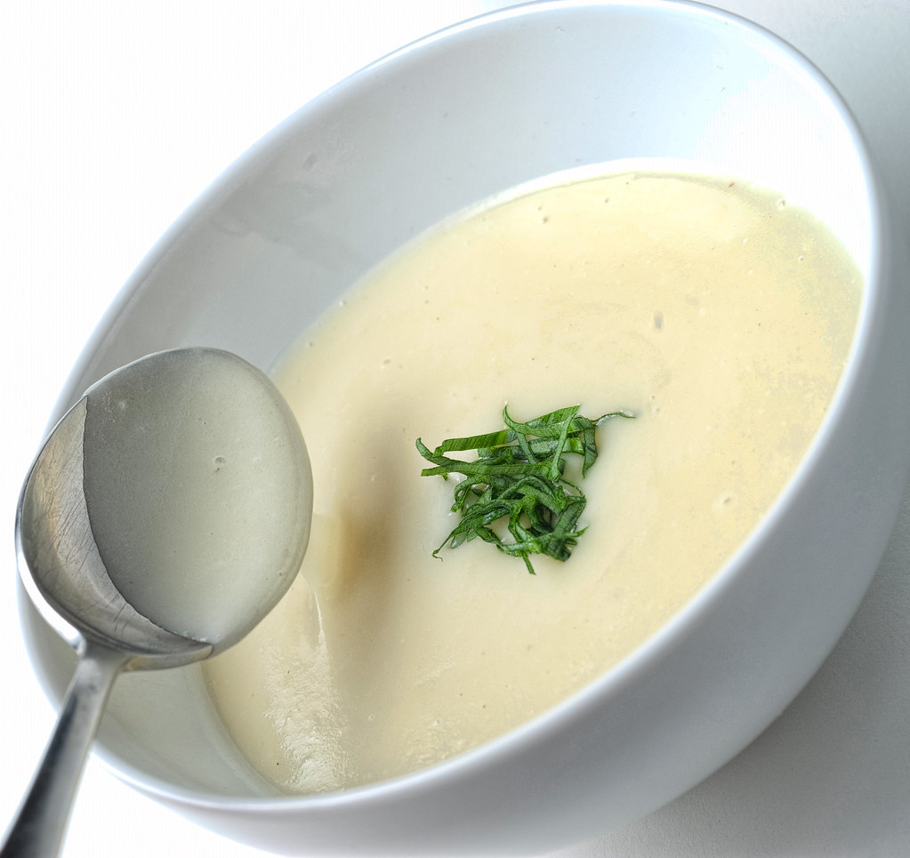

Home
French Spring Soup

Description
French Spring Soup, or Potage de Printemps, is a category of French soups that highlight fresh, seasonal vegetables harvested during the spring.
It's a celebration of the vibrant flavors and colors of the season, often featuring ingredients like asparagus, peas, spinach, leeks, and carrots.
These soups can be creamy, like a Potage Saint-Germain (pea soup), or lighter and brothy, but they are generally characterized by their fresh, bright taste and use of seasonal produce.
Ingredients
- 1/4 cup butter
- 1 pound leeks, chopped
- 1 onion chopped
- 2 quarts water
- 3 large potatoes, chopped
- 2 large carrots, chopped
- 1 bunch fresh asparagus, trimmed and cut into 1 inch pieces
- 1/3 cup uncooked long-grain-white rice
- 4 teaspoons salt
- 1/2 pound fresh spinach
- 1 cup heavy cream
Steps
- Melt the butter in a large pot over medium heat.
Stir in the leeks and onion, and cook until tender.
- Pour water into the pot.
Mix in potatoes, carrots, asparagus, and rice.
Season with salt.
Bring to a boil, reduce heat, and simmer 30 minutes, until vegetables and rice are tender.
- Stir spinach and heavy cream into the soup mixture, and continue cooking about 5 minutes before serving.